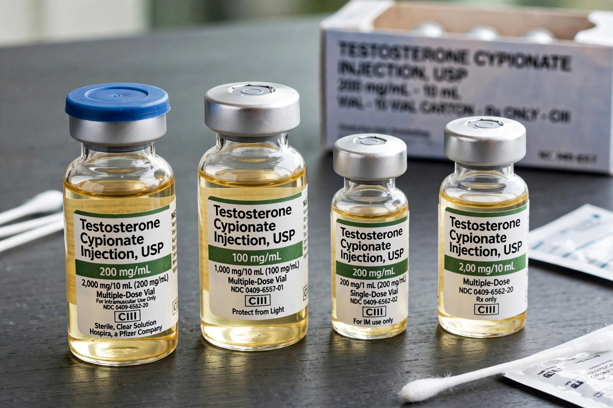

Anabolic steroid
From Wikipedia, the free encyclopedia

Anabolic steroids, technically anabolic-androgenic steroids (AAS), are synthetic derivatives of Testosterone that promote muscle growth (anabolism) and male sexual characteristics (androgenesis). Medically used for hypogonadism, wasting and some anaemias, they are widely misused in sport and bodybuilding — the archetypal performance-enhancing drugs, prohibited by WADA and implicated in the defining doping scandals of cycling, athletics and baseball.
Pharmacology
AAS bind androgen receptors, increasing protein synthesis and nitrogen retention; users 'stack' several compounds in cycles, often with growth hormone and insulin. Doses in misuse run 10–100 times therapeutic levels. Synthetic variants (nandrolone, stanozolol, trenbolone) trade androgenic for anabolic effect but none cleanly separates the two.
Harms and history
Adverse effects include cardiovascular disease and cardiomyopathy, liver damage (oral 17α-alkylated compounds), infertility and testicular shrinkage, gynecomastia, acne, aggression and dependence; adolescent use can fuse growth plates. Testosterone was isolated in 1935 (Nobel Prize); East Germany's state programme (State Plan 14.25) and the 1988 Ben Johnson scandal made AAS a public drama, and designer steroids (BALCO's 'the clear', 2003) drove modern anti-doping science.